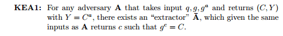

Zk-SNARKs: Under the Hood
This is the third part of a series of articles explaining how the technology behind zk-SNARKs works; the previous articles on quadratic arithmetic programs and elliptic curve pairings are required reading, and this article will assume knowledge of both concepts. Basic knowledge of what zk-SNARKs are and what they do is also assumed. See also Christian Reitwiessner’s article here for another technical introduction.
In the previous articles, we introduced the quadratic arithmetic program, a way of representing any computational problem with a polynomial equation that is much more amenable to various forms of mathematical trickery. We also introduced elliptic curve pairings, which allow a very limited form of one-way homomorphic encryption that lets you do equality checking. Now, we are going to start from where we left off, and use elliptic curve pairings, together with a few other mathematical tricks, in order to allow a prover to prove that they know a solution for a particular QAP without revealing anything else about the actual solution.
This article will focus on the Pinocchio protocol by Parno, Gentry, Howell and Raykova from 2013 (often called PGHR13); there are a few variations on the basic mechanism, so a zk-SNARK scheme implemented in practice may work slightly differently, but the basic principles will in general remain the same.
To start off, let us go into the key cryptographic assumption underlying the security of the mechanism that we are going to use: the knowledge-of-exponent assumption.
Basically, if you get a pair of points P and Q, where P * k = Q, and you get a point C, then it is not possible to come up with C * k unless C is “derived” from P in some way that you know. This may seem intuitively obvious, but this assumption actually cannot be derived from any other assumption (eg. discrete log hardness) that we usually use when proving security of elliptic curve-based protocols, and so zk-SNARKs do in fact rest on a somewhat shakier foundation than elliptic curve cryptography more generally — although it’s still sturdy enough that most cryptographers are okay with it.
Now, let’s go into how this can be used. Supposed that a pair of points (P, Q) falls from the sky, where P * k = Q, but nobody knows what the value of k is. Now, suppose that I come up with a pair of points (R, S) where R * k = S. Then, the KoE assumption implies that the only way I could have made that pair of points was by taking P and Q, and multiplying both by some factor r that I personally know. Note also that thanks to the magic of elliptic curve pairings, checking that R = k * S doesn’t actually require knowing k - instead, you can simply check whether or not e(R, Q) = e(P, S).
Let’s do something more interesting. Suppose that we have ten pairs of points fall from the sky: (P_1, Q_1), (P_2, Q_2)… (P_10, Q_10). In all cases, P_i * k = Q_i. Suppose that I then provide you with a pair of points (R, S) where R * k = S. What do you know now? You know that R is some linear combination P_1 * i_1 + P_2 * i_2 + … + P_10 * i_10, where I know the coefficients i_1, i_2 … i_10. That is, the only way to arrive at such a pair of points (R, S) is to take some multiples of P_1, P_2 … P_10 and add them together, and make the same calculation with Q_1, Q_2 … Q_10.
Note that, given any specific set of P_1…P_10 points that you might want to check linear combinations for, you can’t actually create the accompanying Q_1…Q_10 points without knowing what k is, and if you do know what k is then you can create a pair (R, S) where R * k = S for whatever R you want, without bothering to create a linear combination. Hence, for this to work it’s absolutely imperative that whoever creates those points is trustworthy and actually deletes k once they created the ten points. This is where the concept of a “trusted setup” comes from.
Remember that the solution to a QAP is a set of polynomials (A, B, C) such that A(x) * B(x) - C(x) = H(x) * Z(x), where:
- A is a linear combination of a set of polynomials {A_1…A_m}
- B is the linear combination of {B_1…B_m} with the same coefficients
- C is a linear combination of {C_1…C_m} with the same coefficients
The sets {A_1…A_m}, {B_1…B_m} and {C_1…C_m} and the polynomial Z are part of the problem statement.
However, in most real-world cases, A, B and C are extremely large; for something with many thousands of circuit gates like a hash function, the polynomials (and the factors for the linear combinations) may have many thousands of terms. Hence, instead of having the prover provide the linear combinations directly, we are going to use the trick that we introduced above to have the prover prove that they are providing something which is a linear combination, but without revealing anything else.
You might have noticed that the trick above works on elliptic curve points, not polynomials. Hence, what actually happens is that we add the following values to the trusted setup:
- G * A_1(t), G * A_1(t) * k_a
- G * A_2(t), G * A_2(t) * k_a
- …
- G * B_1(t), G * B_1(t) * k_b
- G * B_2(t), G * B_2(t) * k_b
- …
- G * C_1(t), G * C_1(t) * k_c
- G * C_2(t), G * C_2(t) * k_c
- …
You can think of t as a “secret point” at which the polynomial is evaluated. G is a “generator” (some random elliptic curve point that is specified as part of the protocol) and t, k_a, k_b and k_c are “toxic waste”, numbers that absolutely must be deleted at all costs, or else whoever has them will be able to make fake proofs. Now, if someone gives you a pair of points P, Q such that P * k_a = Q (reminder: we don’t need k_a to check this, as we can do a pairing check), then you know that what they are giving you is a linear combination of A_i polynomials evaluated at t.
Hence, so far the prover must give:
- π_a = G * A(t), π’_a = G * A(t) * k_a
- π_b = G * B(t), π’_b = G * B(t) * k_b
- π_c = G * C(t), π’_c = G * C(t) * k_c
Note that the prover doesn’t actually need to know (and shouldn’t know!) t, k_a, k_b or k_c to compute these values; rather, the prover should be able to compute these values just from the points that we’re adding to the trusted setup.
The next step is to make sure that all three linear combinations have the same coefficients. This we can do by adding another set of values to the trusted setup: G * (A_i(t) + B_i(t) + C_i(t)) * b, where b is another number that should be considered “toxic waste” and discarded as soon as the trusted setup is completed. We can then have the prover create a linear combination with these values with the same coefficients, and use the same pairing trick as above to verify that this value matches up with the provided A + B + C.
Finally, we need to prove that A * B - C = H * Z. We do this once again with a pairing check:
e(π_a, π_b) / e(π_c, G) ?= e(π_h, G * Z(t))
Where π_h = G * H(t). If the connection between this equation and A * B - C = H * Z does not make sense to you, go back and read the article on pairings.
We saw above how to convert A, B and C into elliptic curve points; G is just the generator (ie. the elliptic curve point equivalent of the number one). We can add G * Z(t) to the trusted setup. H is harder; H is just a polynomial, and we predict very little ahead of time about what its coefficients will be for each individual QAP solution. Hence, we need to add yet more data to the trusted setup; specifically the sequence:
G, G * t, G * t², G * t³, G * t⁴ ….
In the Zcash trusted setup, the sequence here goes up to about 2 million; this is how many powers of t you need to make sure that you will always be able to compute H(t), at least for the specific QAP instance that they care about. And with that, the prover can provide all of the information for the verifier to make the final check.
There is one more detail that we need to discuss. Most of the time we don’t just want to prove in the abstract that some solution exists for some specific problem; rather, we want to prove either the correctness of some specific solution (eg. proving that if you take the word “cow” and SHA3 hash it a million times, the final result starts with 0x73064fe5), or that a solution exists if you restrict some of the parameters. For example, in a cryptocurrency instantiation where transaction amounts and account balances are encrypted, you want to prove that you know some decryption key k such that:
- decrypt(old_balance, k) ≥ decrypt(tx_value, k)
- decrypt(old_balance, k) - decrypt(tx_value, k) = decrypt(new_balance, k)
The encrypted old_balance, tx_value and new_balance should be specified publicly, as those are the specific values that we are looking to verify at that particular time; only the decryption key should be hidden. Some slight modifications to the protocol are needed to create a “custom verification key” that corresponds to some specific restriction on the inputs.
Now, let’s step back a bit. First of all, here’s the verification algorithm in its entirety, courtesy of ben Sasson, Tromer, Virza and Chiesa:
.png)
The first line deals with parametrization; essentially, you can think of its function as being to create a “custom verification key” for the specific instance of the problem where some of the arguments are specified. The second line is the linear combination check for A, B and C; the third line is the check that the linear combinations have the same coefficients, and the fourth line is the product check A * B - C = H * Z.
Altogether, the verification process is a few elliptic curve multiplications (one for each “public” input variable), and five pairing checks, one of which includes an additional pairing multiplication. The proof contains eight elliptic curve points: a pair of points each for A(t), B(t) and C(t), a point π_k for b * (A(t) + B(t) + C(t)), and a point π_h for H(t). Seven of these points are on the F_p curve (32 bytes each, as you can compress the y coordinate to a single bit), and in the Zcash implementation one point (π_b) is on the twisted curve in F_p² (64 bytes), so the total size of the proof is ~288 bytes.
The two computationally hardest parts of creating a proof are:
- Dividing (A * B - C) / Z to get H (algorithms based on the Fast Fourier transform can do this in sub-quadratic time, but it’s still quite computationally intensive)
- Making the elliptic curve multiplications and additions to create the A(t), B(t), C(t) and H(t) values and their corresponding pairs
The basic reason why creating a proof is so hard is the fact that what was a single binary logic gate in the original computation turns into an operation that must be cryptographically processed through elliptic curve operations if we are making a zero-knowledge proof out of it. This fact, together with the superlinearity of fast Fourier transforms, means that proof creation takes ~20–40 seconds for a Zcash transaction.
Another very important question is: can we try to make the trusted setup a little… less trust-demanding? Unfortunately we can’t make it completely trustless; the KoE assumption itself precludes making independent pairs (P_i, P_i * k) without knowing what k is. However, we can increase security greatly by using N-of-N multiparty computation - that is, constructing the trusted setup between N parties in such a way that as long as at least one of the participants deleted their toxic waste then you’re okay.
To get a bit of a feel for how you would do this, here’s a simple algorithm for taking an existing set (G, G * t, G * t², G * t³…), and “adding in” your own secret so that you need both your secret and the previous secret (or previous set of secrets) to cheat.
The output set is simply:
G, (G * t) * s, (G * t²) * s², (G * t³) * s³…
Note that you can produce this set knowing only the original set and s, and the new set functions in the same way as the old set, except now using t*s as the “toxic waste” instead of t. As long as you and the person (or people) who created the previous set do not both fail to delete your toxic waste and later collude, the set is “safe”.
Doing this for the complete trusted setup is quite a bit harder, as there are several values involved, and the algorithm has to be done between the parties in several rounds. It’s an area of active research to see if the multi-party computation algorithm can be simplified further and made to require fewer rounds or made more parallelizable, as the more you can do that the more parties it becomes feasible to include into the trusted setup procedure. It’s reasonable to see why a trusted setup between six participants who all know and work with each other might make some people uncomfortable, but a trusted setup with thousands of participants would be nearly indistinguishable from no trust at all - and if you’re really paranoid, you can get in and participate in the setup procedure yourself, and be sure that you personally deleted your value.
Another area of active research is the use of other approaches that do not use pairings and the same trusted setup paradigm to achieve the same goal; see Eli ben Sasson’s recent presentation for one alternative (though be warned, it’s at least as mathematically complicated as SNARKs are!)
Special thanks to Ariel Gabizon and Christian Reitwiessner for reviewing.